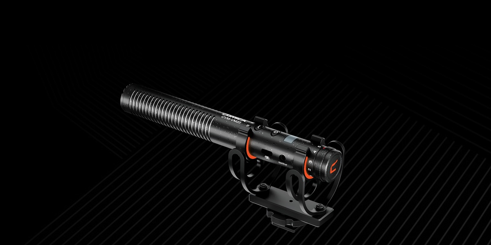

Here is the gear I am running right now, what I like, and what I still want to improve.
Camera - Canon XA70
It supports 4K at 30fps only when recording to local storage, so it cannot stream 4K.
That is my only regret in this purchase and something I would like to change in the
future. It can stream at 1080p at 59.98fps using the HDMI output, not the UVC output,
which tops out at 30fps.
The primary features for me are HDR support, image quality, and the
15x zoom. The
ability to tweak between Tv and Av modes is super helpful, and the Continuous AF
(Servo AF) focus speed keeps up with the pace of sports.
HDMI output delivers 1080p at 59.98fps for streaming.
UVC output is limited to 30fps.
HDR, 15x zoom, and fast Continuous AF.

Microphone - Comica VM20
I mount this on top of the camera to point it at the action. Generally speaking, it
works great, and it was a big step up from the old desktop USB mic I used before.
It has two low-cut filter modes that help reduce the white noise in the arena
(heaters, fans, angry parents).
Before I realized the Canon output differences, I used only the USB-C cable with
Canon's UVC (USB Video Class). The image looked good, but motion was not smooth
because UVC tops out at 30fps. HDMI gives me the full 59.98fps from the Canon.
To get HDMI into my laptop, I needed a capture card. The Elgato takes the mini-HDMI
output from the Canon, converts it to HDMI into the Cam Link, and then sends video over
USB-C to my laptop.
It supports 4K, but the Canon cannot stream 4K, so the Cam Link should not limit video
quality if I upgrade the camera later.
If you take anything away here, processor power and battery life matter most, plus
enough disk space for video files before you move them to long-term storage (or delete
them). The M-series MacBooks use arm64 processors and they are incredible.
I tried streaming on an Intel-based Mac and had poor results; it was severely
underpowered. With the M1 Pro, I barely notice the stream running because the arm64
processor handles video encoding efficiently.
Depending on the rink WiFi, I might remux down from 1080p to 720p for bandwidth, and
that can eat battery life. Even then, I usually have more than half my battery left
after one game. RAM is not as critical—most modern setups are fine.
I started with a cheap tripod that worked for phone recording, but after streaming in
different rinks, height became critical. Sometimes the tripod has to sit below you and
still get the camera up to eye level.
I have set it up against walls, in bleachers next to roof beams, and even overlooking
high bar tables. The main takeaway is you need a lot of height and the ability to stay
stable on uneven ground.
A handle to push the camera around from the tripod is essential. The H8 has settings
that make it adjustable to the tripod setup and the camera.
The only issue I have seen is if your camera is too light, the head can feel stiff,
like you are fighting it. The extendable handle broke less than a year in, but Cayer
replaced it with no issues and I have been good since.
I have tried other zoom remotes and I like this one the most. Push-button remotes are
garbage—if possible, get something mechanical.
This one mounts on the tripod handle and your thumb pushes either direction on the
zoom control. I zoom a lot so viewers on smaller screens can see the action, and this
mechanism holds up far better than soft buttons.
I replaced it only because the cord port stopped working on one of the two entry
points. Otherwise it has held up over thousands of uses.
It is rare to have a convenient place to use a laptop touchpad, so hotkeys are
essential if you want to keep your sanity. I considered a Stream Deck, but the cost
did not feel worth it.
The Huion is programmable per app. I do not label the keys much; I just memorize them.
I mount it to the tripod with an old phone mount and a
clamp so I can hit hotkeys while I stream.
Hotkeys power instant replays, goals/penalties/shots, and starting or stopping the
clock. It is not required for vanilla streaming, but it is how you become a one-person
band.